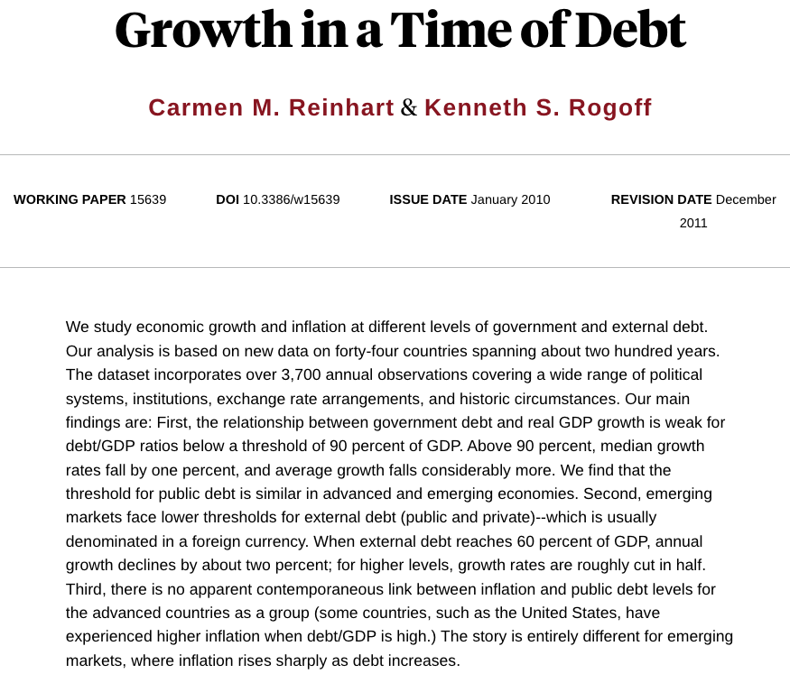

02:00
Irreproducibility Tales (part I)
Famous Catastrophes in Computational Irreproducibility
The Global Austerity Excel Error
Reading
- Title: The Reinhart-Rogoff Error - or how not to Excel at economics
- Authors: Jonathan Borwein and David H. Bailey
- Journal: The Conversation
- Year: 2013
- https://theconversation.com/the-reinhart-rogoff-error-or-how-not-to-excel-at-economics-13646
Supporting Materials
Growth in a Time of Debt (C. Reinhart, K. Rogoff, 2010)
https://www.nber.org/papers/w15639
Does high public debt consistently stifle economic growth? A critique of Reinhart and Rogoff (T. Herndon, M. Ash, R. Pollin, 2014)
https://peri.umass.edu/wp-content/uploads/joomla/images/WP322.pdf
The Story
Overview
In 2010, Harvard economists Carmen Reinhart and Kenneth Rogoff (R&R) published an influential paper claiming that countries with public debt over 90% of GDP experience negative economic growth.
Overview

This study was widely cited by politicians to justify harsh post-recession austerity cuts.
Replication Attempt
Years later, graduate student Thomas Herndon tried to replicate the study of Reinhart & Rogoff for a class project and failed.
He found various problems:
- Selective exclusion of available data
- Coding errors
- Inappropriate weighting of summary statistics
His conclusion: Over 1946–2009, countries with public debt/GDP ratios above 90% averaged 2.2% real annual GDP growth, not −0.1% as published
One of the issues
Thomas Herndon discovered that R&R had accidentally missed five major countries when dragging down their AVERAGE() formula row.
Correcting this basic clerical error completely reversed their main conclusion.
Discussion
Prompt
- Imagine you are Thomas Herndon.
- You have downloaded the spreadsheet.
- Your averages don’t match the famous paper.
- Your peers tell you that you must have made a mistake because two famous Harvard professors wrote the original code.
How do you approach your advisor with your findings?
Activity
We’re going to divide the classroom into groups
Group A (left-hand side)
- “The Pragmatists”
- Excel is intuitive.
- Banning it slows down scientific output.
Group B (right-hand side)
- “The Purists”
- Excel is fundamentally unscientific.
- Its use should be avoided/minimized.
Brainstorm
Huddle with your immediate neighbors to write down your three strongest arguments based on the Reinhart-Rogoff reading.
Group A (left-hand side)
Find 3 concrete reasons why forcing every field biologist, medical doctor, or social scientist to write Python/R scripts before looking at data actually harms scientific progress.
Group B (right-hand side)
Find 3 specific limitations of Excel that make it completely incompatible with reproducibility.
05:00
Time’s up: Please share your thoughts.
Debate: Group A
Excel is used by almost every major business, government agency, and field biologist on Earth. If we completely ban it in favor of demanding everyone learn command-line Git and Python/R/etc script automation are we just being technical elitists?
Won’t this drastically slow down scientific discovery?
02:00
Debate: Group B
Reinhart and Rogoff were Harvard economists, not amateurs, and they missed an entire block of countries because they dragged a visual box slightly too short.
How can we call an invisible, un-trackable mouse click ‘science’?
02:00
Debate: Role Reversal
- Group A, you are now the Purists.
- Group B, you are now the Pragmatists.
- You must now instantly pivot and attack the very argument you were defending thirty seconds ago.
- Go!
05:00
Some Notes
Defending Excell:
Accessibility: Not every researcher has a computer science background. Excel allows people to discover trends quickly without fighting syntax errors.
Visual Intuition: It lets you physically see the raw matrix of numbers, which helps catch gross data anomalies faster than scanning lines of code.
Collaboration: Almost every person on Earth can open an Excel sheet; passing a script requires setting up specialized software environments.
Some Notes
Attacking Excell:
Silent Reformatting: Excel silently converts from one data type to another, which corrupts content in spreadsheets.
Hidden Logic: The actual mathematical code is buried beneath individual cells. You have to click every box to see if the formula is correct.
No Audit Trail: You cannot use
git diffon an Excel spreadsheet to see exactly which cell a collaborator changed between Tuesday and Thursday.
Question
Excel is an unparalleled tool for Exploratory Data Analysis (EDA): when you just need to scratchpad ideas, sketch a quick chart, and understand your data.
However, Excel is completely unacceptable for the Production Pipeline: the final, published scientific analysis.
The lesson of the Reinhart-Rogoff failure isn’t that spreadsheets are inherently evil; it’s that interactive GUI manipulation lacks a provenance trail.
How can a team use flexible exploratory tools while still guaranteeing absolute script-based reproducibility before publication?
02:00
Question
Pretend your small group is the newly appointed Data Integrity Board for a university research lab:
- Your lab includes older scientists who hate coding and
- Younger students who are in a rush.
You need to write exactly two non-negotiable rules for how data must be processed before a paper can be submitted to a journal.
What are your two rules, and how do you convince the stubborn team members to follow them?
03:00
Wrap Up
With the tools, ideas and concepts that we’ve covered so far, please debate how would you use them to address the issues with the Excell horror story.
Quiz-Poll Time
Google Form
INSERT QR code!!!
INSERT
Quiz
The core issue that invalidated the famous 2010 Harvard economic paper on national debt limits was rooted in a basic spreadsheet error. What exactly went wrong?
A hacker maliciously altered the underlying CSV data file after it was uploaded to a public repository.
The authors used an outdated version of Microsoft Excel that had a known floating-point calculation bug.
A user interface error where dragging down an AVERAGE formula box accidentally skipped 5 major countries in the calculation.
The data was correct, but the authors forgot to commit their changes to Git before submitting the paper.
Poll
Be completely honest: What is your primary, personal tool for handling raw data right now in your research or coursework?
- Pure Microsoft Excel / Google Sheets (No coding involved).
- A hybrid approach (I look/clean in Excel, then move to Python/R for plots).
- Scripting only (I load raw text/CSVs straight into RStudio, Jupyter, or VS Code).
- “Sneakernet” manual tracking (Folders full of copies like
data_v2_final.csv).
Poll
Rate your level of agreement with this statement:
“Banning spreadsheets completely from academic research would destroy scientific productivity.”
- Strongly Disagree (Code or nothing)
- Disagree
- Neutral
- Agree
- Strongly Agree (Spreadsheets are essential)
Poll
In exactly one word, what is the single biggest threat to data integrity when a researcher relies purely on Excel for their final published paper?
Takeaways
Spreadsheets reduce complex pipelines to invisible clicks that are entirely forgotten once executed.
Workflows should be explicitly coded (via Python, R, or Makefiles) rather than clicked, so every mathematical transformation is fully readable and logged.